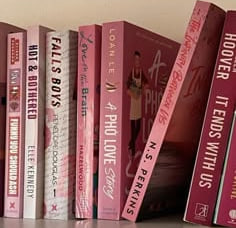
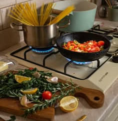
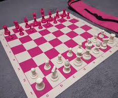
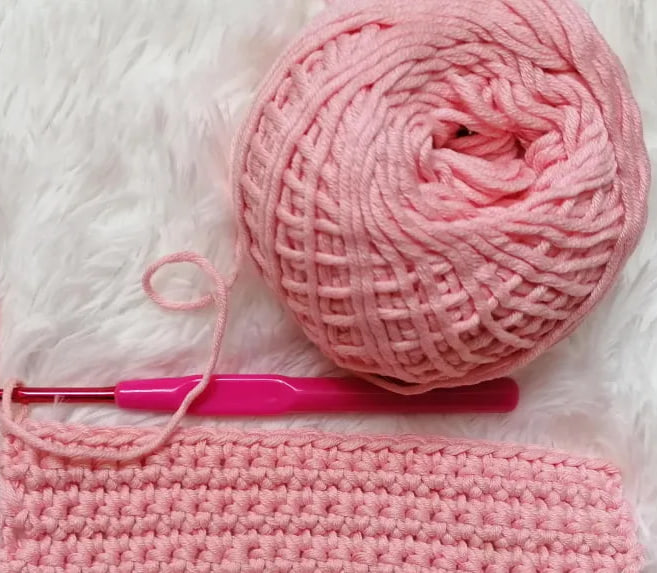

Reading Books
- I enjoy experiencing different lives and emotions through books.
- I read around 40 books a year.
- I love getting lost in entirely different worlds.
- Reading helps me relax and disconnect from stress.
- I like discovering new perspectives and ideas through stories.

Cooking
- I love the creativity and artistry involved in cooking.
- I watch shows like MasterChef and try to recreate the recipes.
- I enjoy making food for the people I care about.
- Presentation matters to me just as much as taste.
- Cooking gives me a sense of accomplishment when a dish turns out well.

Chess
- I enjoy strategizing and thinking ahead.
- It challenges me to stay focused and patient.
- I like analyzing different moves and outcomes.
- Winning feels rewarding after careful planning.

Crochet
- I like how repetitive it is, but the results are always unique.
- It helps me relax and clear my mind.
- I enjoy making my own bags, scarves, and socks.
- Handmade items make meaningful and personal gifts.
- I like being able to turn simple yarn into something useful and creative.